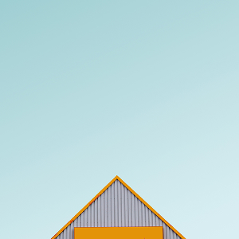
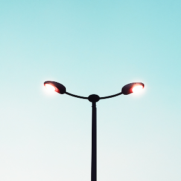

FashHanger is a bespoke sustainable high-fashion accessory company
based out of Berlin, currently operated by Siesly and her sister
Ashely. They needed help for a big rebrand and wanted to relaunch
their website.
Their goals were simple, create a unique e-commerce store that bring a
wonderful shopping experience at every stage of the buyer’s journey.
User Research and Personas
Who is your user? Indicate her KEY personality traits and help round
out her overall image.Originally,
the personality section of this persona was based off the Myers Briggs
personality test. According to the Myers Briggs, there are 16
potential user personality types. Our template integrates questions
from this online personality test example into a series of sliding bar
graphics. If you’re confused as to what the sliders mean, check out
the Myers Briggs basics article.
Initial Sketches

In the beginning, It’s just about brainstorming.
I list out a jumble of words and draw tiny sketches related to what
I’m working on (and find the parallels later). Personally, I prefer
paper with a grid so I can convey things responsively. Most of the
time perfection isn’t an issue and the sketches are just for me.
Final Desigh

I played with adding a wireframe of the website flow that would lead
you in to each screen. For each of those screens I added a floating
footer that allows users to see where they are in that particular flow
and jump around as needed.” We’re digging this InVision-made
wireframe.